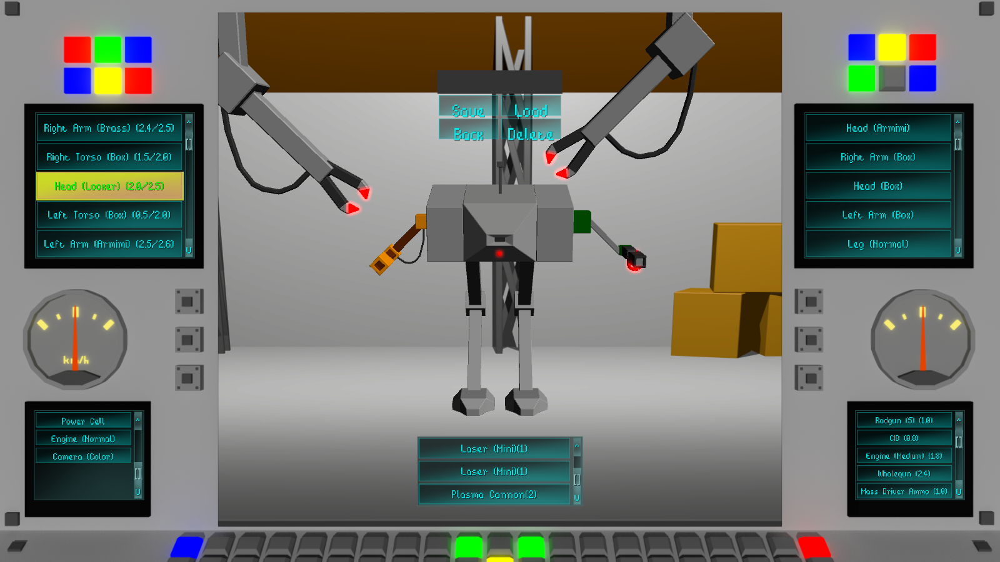
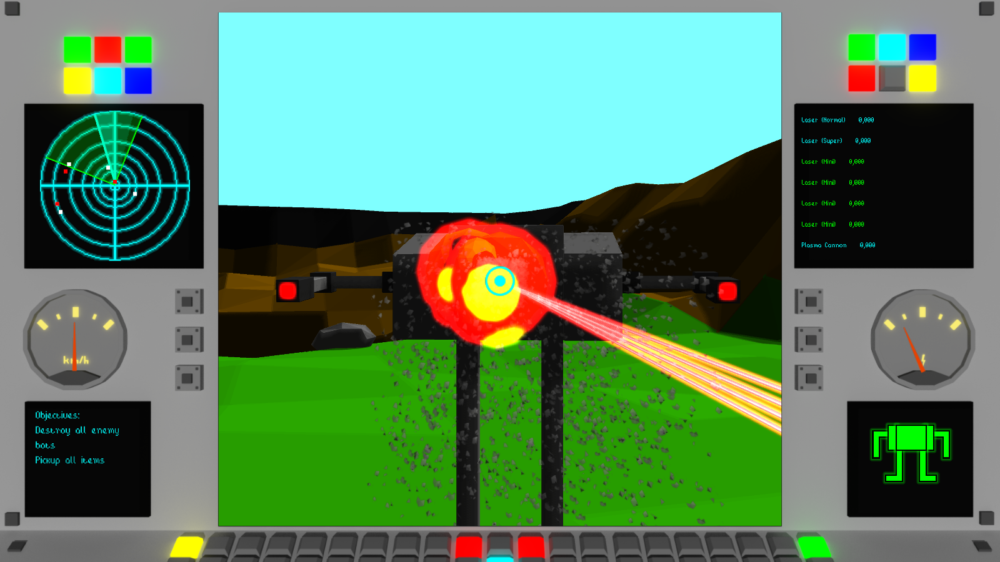
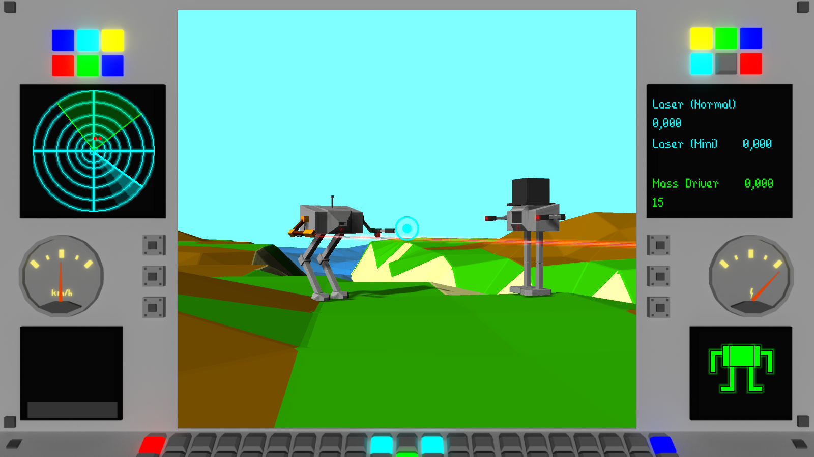

S-RC Bots
A game about building the very best bot from the parts you have! With that, you’ll have to do missions which will reward you with more parts.
Take a look here for more screenshots: Screenshots
Content

Your Bot can be customized in a variety of ways!
There are multiple chassis parts to swap out: The bot head, which is basically your command center.
The left and right torso are normally used for ammuniton.
The arms are the only parts that can contain weapons.
The legs are for movement, and if one is destroyed, your bot is done for.
There’s also internal parts contained within the chassis, these are weapons, ammo, the engine, camera and more.
You can’t just keep stuffing parts into the chassis though:
Each chassis part can only contain internal parts up to a certain weight, so manage carefully!
Missions

The missions are diverse:
There are search-and-destroy missions where you take out any enemy bots you find;
there are item retrieval missions where you have to steal something from under the enemy’s nose;
there are building demolishing missions where a building has to be destroyed because it contains evil weaponry.
Reconnaisance and convoy escort missions exist as well, and protecting a building owned by the good guys is also a thing.
Multiplayer

There’s even multiplayer to have some fun with your friends!
It includes both a deathmatch mode (most kills wins) and “Capture the Hat”, which is Capture the Flag, but with hats!
Platforms
The game is available for Windows and Linux in both x86 and x64 versions.
Buy S-RC Bots
Interested? Head over to itch.io and get the game DRM-free for only 6.99!